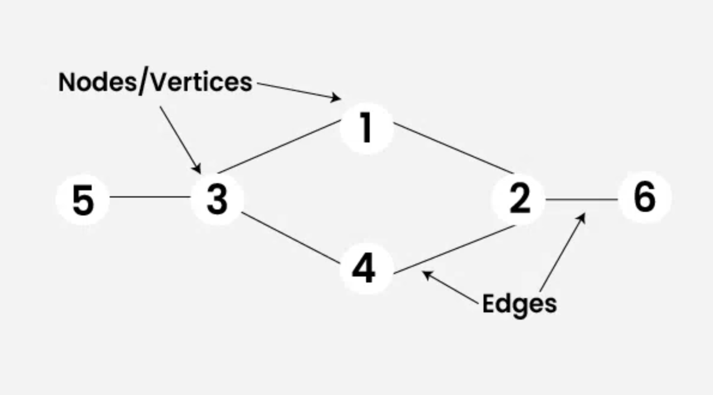

Graphs
A graph is a set of vertices (nodes) connected by edges. Graphs are used to model connections like social networks, maps, and recommendation systems.

Types of graphs
- Undirected: edges go both ways (friendship)
- Directed: edges have direction (follow, web links)
- Weighted: edges have costs (distance, time, price)
Representing graphs
Two common ways are an adjacency list (store neighbors for each node) and an adjacency matrix (a grid showing connections). Adjacency lists are often more space-efficient when there aren’t many edges.
Graph algorithms you’ll see a lot
- BFS (uses a queue) for exploring level by level
- DFS (uses a stack/recursion) for exploring deeply
- Dijkstra’s for shortest path in weighted graphs
Graph Terminology
- Vertex: A node in the graph
- Edge: A connection between two vertices
- Degree: Number of edges connected to a vertex
Real-World Applications
- Google Maps route finding
- Social networks
- Internet routing